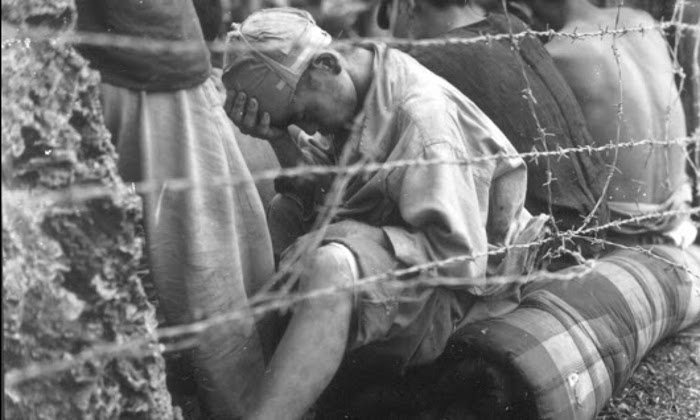

|
回目录 回主页 |
二○○六年初夏的長春，工人們在挖掘下水管道時，竟然從土裡挖出了大量人骨。骸骨多達數千具，緊緊地排在一起，埋在地下一公尺左右的地方，有些已經因發霉而變黑。工人們繼續往下挖，結果發現了更多層的屍骨，就像柴火一樣堆在一起。發掘現場圍滿了震驚的群眾，有人認為這些人死於二次大戰日本侵略者之手，只有一個老人心裡清楚，這些其實都是國共內戰中的死難者。 一九四八年，人民解放軍包圍長春城長達五個月之久，駐守城內的國民黨軍隊陷入彈盡糧絕的境地。解放軍最終取得了勝利，但這次圍城至少造成十六萬平民餓死。解放之後，共產黨軍隊將許多屍體集中掩埋，既沒有墓碑，也沒有名牌，甚至連簡單的標記都沒有。此後的數十年裡，官方一直宣傳中國是和平解放的，那些死於國共權力之爭的平民便慢慢被歷史遺忘了。 長春位於東北平原的中部，在一八九八年修築鐵路之前，只是一個小鎮。後來，由於日本人管理的南滿鐵路和俄國人經營的中東鐵路在此匯合，它開始迅速地發展起來。一九三二年，長春成為滿洲國的首都，日本人將它建設成為一座現代化的城市，開闢了寬敞的大道，種植了樹木，興建了各種公共設施，米黃色的帝國辦公大廈高大雄偉，建在開闊的公園旁邊，而日本的顧問和與日本政府合作的滿族人則住在一棟棟漂亮的別墅裡。一九四五年八月，蘇聯軍隊占領了這座城市，拆毀了無數的建築與機器，並將這些戰利品用火車全部運回了蘇聯，各種工業設備遭到拆卸，許多漂亮的房子被夷為平地。蘇聯人在滿洲一直待到一九四六年四月，直到國民黨軍隊占領長春才開始撤離。兩個月後，內戰爆發了，滿洲再次成為戰場。戰爭伊始，共產黨軍隊占有先機，他們從北方南下，截斷了連接長春與滿洲南部的鐵路。 一九四八年四月，共產黨軍隊逼近長春，指揮這支軍隊的正是林彪。林彪看上去又瘦又憔悴，他早年畢業於黃埔軍校，是一名傑出的戰略家，指揮作戰的才能得到大家的公認。但他是個無情的人，當他得知防守長春城的國民黨軍官鄭洞國不願投降時，便下令包圍長春城，直到守軍投降為止。一九四八年五月三十日，他下達命令：「要使長春成為死城。」長春城內的平民超過五十萬人，許多人都是逃避戰亂的難民，他們原打算逃亡北京，但由於鐵路被阻斷，所以困在了長春城內。圍城開始後，國民黨軍隊立即實行了宵禁，所有人從晚上八點到淩晨五點都不得外出，全體壯年男子都必須參與挖戰壕，所有人一律不得出城，拒絕接受搜查者可以當場擊斃。最初的幾個星期裡，大家對形勢仍感到樂觀，因為國民政府向城內空投了許多緊急物資，當地的一些頭面人物也成立了長春動員委員會，出售糖果和香菸，安撫傷患，並設立了茶攤，為老百姓提供服務。 但形勢很快便開始惡化，長春變成了一座孤島。二十萬解放軍士兵在城外挖掘戰壕，切斷了供應給城內的地下水，並動用數十門高射機槍和重炮日夜不停地開火，集中火力砲轟政府機構。國民黨軍隊在長春城四周修築了許多碉堡，與解放軍形成對峙。兩軍之間則是大片的無人地帶，很快便被土匪所占據。一九四八年六月十二日，蔣介石電令長春守軍，取消了禁止城內居民出城的禁令。其實，就算沒有敵人的炮火，國民黨的飛機也無法空投足夠的物資滿足全城居民的需求，更何況在共產黨的防空炮火下，飛機不得不爬升到三千米的高度，因此許多物資都落在了國民黨控制區外。 為了避免出現飢荒，國民黨軍隊開始鼓勵群眾往城外逃，但一旦出城就不准返回，因為城裡已經無糧可吃。每一個出城的難民都要經過嚴格的搜查，所有金屬物件（如鐵鍋、茶壺、金銀器具等）一律不准帶出城，甚至連鹽也不行。 出城後，難民們要經過一個無人地帶，這裡光線昏暗，而且有土匪出沒，攔路搶劫過往行人。這些土匪大多是逃兵，他們騎著馬挎著槍，有的還使用暗語。有一些聰明的難民出城時想方設法在身上藏了些珠寶、手錶或自來水筆，但是只要被土匪發現任何值錢的東西，哪怕是縫在衣服裡的一隻耳環或手鐲，就有可能被當場槍斃。 有時候，土匪還會把難民的衣服扒光，但還是有少數人成功保住了最值錢的財物，他們將這些東西放在麻袋的最下面，上面則堆滿了破衣爛衫，甚至滿是尿漬的嬰兒衣物，希望用難聞的味道逃過土匪的搜查。 與躲避土匪的搶劫相比，能通過解放軍封鎖線的人則少之又少。林彪下令挖了深達四公尺的戰壕，並拉起鐵絲網，而且每隔五十公尺就設一個崗哨，找不到漏洞可鑽。他向毛澤東報告說：「不讓難民出來，出來者勸阻回去。此法初期有效，但後來飢餓情況越來越嚴重，飢民便不分晝夜大批蜂擁而出，經我趕回後，群集於敵我警戒線之中間地帶。」在描述那些渴望通過解放軍封鎖線的難民時，林彪說：飢民們成群跪在我哨兵面前央求放行，有的將嬰兒小孩丟下就跑，有的持繩在我崗哨前上吊。戰士見此慘狀心腸頓軟，有陪同飢民跪下一道哭的，說「我們也只是遵從上級命令」。更有將難民偷放過去的。經糾正後，又發現了另一種傾向，即士兵打罵捆綁以至開槍射擊難民，引起部分死亡（尚無死傷數字）。

當時圍城的士兵裡，有一個人叫王俊如，他十五歲時被共產黨拉去參加民兵，在圍城期間，他和其他士兵一起奉命將飢民們趕了回去。半個世紀後，他回憶說：「上級告訴我們，這些人都是敵人，他們必須死。」
到了六月底，在國共兩軍對峙的中間地帶聚集了三萬多人，解放軍不放他們通過，國民黨軍隊也不准其回城，每天都有數百人死亡。兩個月後，滯留在這片死亡地帶的平民超過十五萬人，他們只能靠吃草和樹葉為生，最終大都活活餓死，在烈日的灼晒下，遍地屍體一個個肚皮鼓脹。 有一名倖存者回憶說，空氣裡到處彌漫著一股屍臭。城裡的情形也好不到哪裡去，除了空投物資給軍隊，每天還需要三百三十噸的糧食供應給平民，但四、五架飛機每天最多只能輸送八十四噸糧食，而且通常少於這個數量。為了保衛長春，所有物資都已被軍隊徵用。八月，蔣介石甚至下令嚴禁私人交易，並威脅說違者一律槍斃。很快地，國民黨士兵開始持槍搶奪老百姓的食物。所有的軍馬、狗、貓和鳥都被殺光，普通人只能吃發霉的高粱和玉米，再往後只有吃樹皮，還有人吃蟲子和皮帶。 甚至有少數人吃人肉，在黑市裡，人肉一磅賣到一點二美元。自殺者無以計數，有些家庭甚至舉家自殺來逃避苦難。道路兩旁隨處可見餓死者的屍體。張英華的哥哥、姊姊和大多數鄰居都死於那場飢荒，她在接受採訪時回憶說：「我們就躺在床上等死，連爬的力氣都沒有。」另一名倖存者宋占林回憶說，她曾路過一間小房子，門開了一條縫，「我進去一看，只見屋裡躺著十幾具屍體，床上、地上都是。床上的屍體中，有一個人枕著枕頭，有一個姑娘抱著一個嬰兒，他們看上去就像睡著了一樣，牆上的鐘還在不停地走著。」到了秋天，氣溫開始下降，活著的人都拚命地想辦法取暖。為了尋找燃料，他們拆掉地板和屋頂，有時拆毀整棟房子，樹全被砍光，就連招牌也被劈了當柴燒，馬路上的柏油也被扒掉了。整座城市就這樣，從郊區直到市中心，一點一點地遭到毀壞，最終全市有百分之四十的房子化成了灰燼。 解放軍的密集轟炸更令這一幕雪上加霜，老百姓只能搭起臨時的窩棚棲身，周圍一片廢墟，到處是腐爛的屍體，而國民黨的高官們則躲在中央銀行堅固的大樓裡。 在圍城期間，不斷有國民黨士兵逃跑。與難民的遭遇不同，這些逃兵得到解放軍的優待，並獲得充足的食物。共產黨的高音喇叭日夜不停地喊話，鼓動國民黨士兵逃跑：「你參加了國民黨軍隊嗎？你是被繩子綁著抓去的⋯⋯到我們這邊來吧！長春現在已經無路可逃⋯⋯」夏天過後，國民黨軍隊的口糧減少到每天只有三百克大米和麵粉，逃兵的人數開始迅速飆升。圍城持續了一百五十天。一九四八年十月十六日，蔣介石終於命令鄭洞國往南邊的瀋陽撤退。蔣問鄭：「如果長春陷落，你認為北平會安全嗎？」鄭歎了一口氣說：「全中國沒有一個地方是安全的。」 鄭洞國當時指揮著兩支軍隊，一支是六十軍，士兵大都來自雲南；另一支是新七軍，主要是由受過美國訓練的老兵組成，他們曾遠征緬甸前線，戰鬥力很強。新七軍奉命突圍，但未能成功。六十軍拒絕出城，因為士兵太過虛弱，根本無法行軍至瀋陽。結果，六十軍將槍頭轉向新七軍，向林彪投降，交出了長春城。 共產黨的歷史書聲稱，解放軍在東北取得了決定性的勝利，但長春的陷落卻付出了高昂的代價。在解放軍的圍困之下，大約有十六萬平民餓死。 一名解放軍的部隊作家張正隆在其書中寫道：「長春和廣島，死亡人數大致相等。廣島用九秒鐘。長春是五個月。」 |
回目录 回主页 |